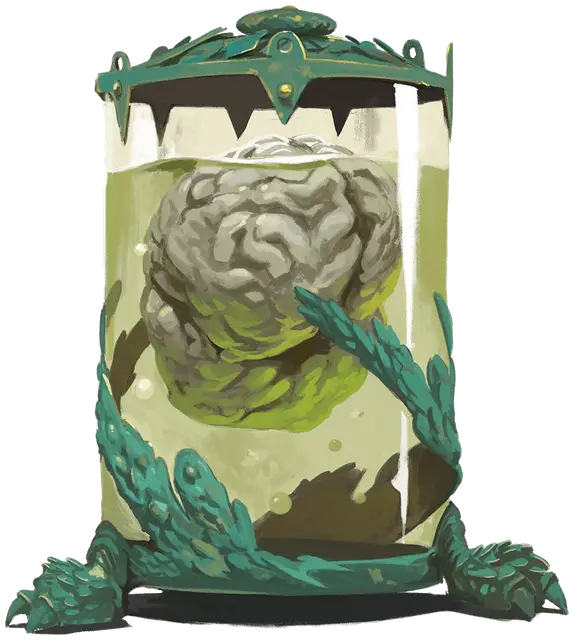

Мозг в банке
Brain in a Jar
Маленькая Нежить, без мировоззрения

Класс Доспеха 11 (природный доспех)
Хиты 55 (10к6 + 20)
Скорость 0 футов, летая 10 футов (парит)
| мод | спас | ||
|---|---|---|---|
| СИЛ | 1 | −5 | −5 |
| ЛОВ | 3 | −4 | −4 |
| ТЕЛ | 15 | +2 | +2 |
| мод | спас | ||
|---|---|---|---|
| ИНТ | 19 | +4 | +6 |
| МДР | 10 | +0 | +0 |
| ХАР | 15 | +2 | +4 |
Иммунитет к урону яд
Иммунитет к состояниям истощение, отравление, паралич, сбивание с ног
Чувства слепое зрение 120 футов (слеп за пределами этого радиуса), пассивное Восприятие 10 (см. также “Обнаружение сознания” ниже)
Опасность 3 (700 опыта)
Бонус мастерства +2
Особенности
Языки. Языки, которые он знал при жизни.
Обнаружение сознания. Мозг может чувствовать присутствие и местоположение любого существа в пределах 300 футов от него, обладающего Интеллектом 3 или выше, независимо от преграждающих барьеров, если только существо не защищено заклинанием сокрытие разума [mind blank].
Сопротивление магии. Мозг совершает с преимуществом спасброски против заклинаний и прочих магических эффектов.
Необычная природа. Мозг не нуждается в воздухе, еде, питье или сне.
Действия
Леденящее прикосновение (заговор). Дальнобойная атака заклинанием: +6 к попаданию, дальность 120 фт., одно существо. Попадание: 13 (3к8) урона некротической энергией, и цель не может восстанавливать хиты до начала следующего хода мозга. Если цель является нежитью, она также совершает с помехой броски атаки по мозгу до конца следующего хода мозга.
Взрыв разума (перезарядка 5-6). Мозг магическим образом излучает психическую энергию в 60-футовом конусе. Каждое существо в этой области должно преуспеть в спасброске Интеллекта Сл 14, иначе получит 17 (3к8 + 4) урона психической энергией и станет ошеломлённым на 1 минуту. Ошеломленное существо может повторять спасбросок в конце каждого своего хода, оканчивая эффект на себе при успехе.
Врожденное колдовство (псионика). Мозг накладывает одно из следующих заклинаний, не нуждаясь ни в каких компонентах. Его базовой характеристикой является Интеллект (Сл спасброска 14):
• Неограниченно: обнаружение мыслей [detect thoughts], волшебная рука [mage hand], область истины [zone of truth]
• 3/день каждое: очарование личности [charm person], удержание личности [hold person]
• 1/день каждое: принуждение [compulsion], удержание чудовища [hold monster], усыпление [sleep] (ячейкой 3-го уровня), жуткий смех Таши [tasha’s hideous laughter]
Описание
При проведении ритуалов, сочетающих алхимию, некромантию и мрачную хирургическую точность, мозг смертного существа может быть заключен в стеклянную банку, наполненную консервирующими жидкостями и разжиженной плотью его тела. Трансформация делает мозг нестареющим и наполняет его псионической силой, так что он может провести вечность, планируя и исполняя свои желания.
Мозг в банке может говорить без голосовых связок, псионически проецируя свой бестелесный голос наружу, слышимый всеми. Ему так нравится беседовать, что он склонен говорить часами напролет, иногда сам с собой, если нет других собеседников. Он также любит размышлять вслух и размышлять о событиях и решениях, которые привели к его великой трансформации.
Сосуды для мозга
Мозг плавает в банке с раствором, пульсируя, реагируя на окружающую среду. Известно, что некоторые мозги бьются о стенки своих контейнеров, когда возбуждены или раздражены. Металлический корпус банки может быть ржавым, но исправным, или изящно выполненным шедевром, в зависимости от его создателя. Тем не менее, нет ничего более желанного для мозга, чем вернуть себе тело. Это может быть первоначальное тело мозга, еще одна оболочка, которую они вожделеют, или какая-то более сложная разработка их собственного дьявольского творения. Будучи бестелесным, мозг в банке весит примерно 125 фунтов.